2022 Higher Biology - Paper 2 marking instructions
Source: Scottish Qualifications Authority (SQA) / Qualifications Scotland. This is a StemInteract HTML companion, not an official HTML edition. Selectable text is supplied alongside original page images. Use the images or original PDF for equations, powers, fractions, vector notation, tables and diagrams; text extraction cannot fully preserve mathematical layout.
Jump to a question
PDF page 1
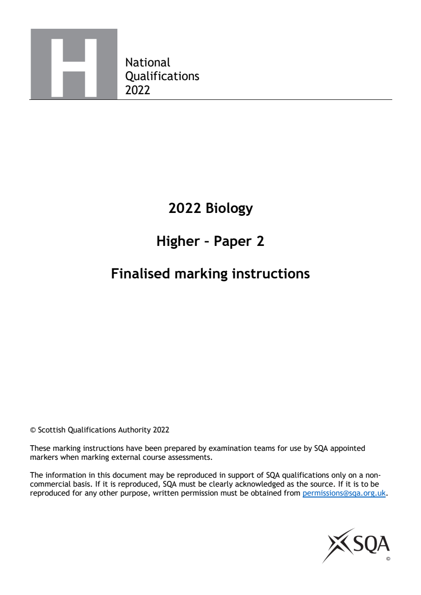
Selectable page text
National
Qualifications
2022
2022 Biology
Higher – Paper 2
Finalised marking instructions
© Scottish Qualifications Authority 2022
These marking instructions have been prepared by examination teams for use by SQA appointed
markers when marking external course assessments.
The information in this document may be reproduced in support of SQA qualifications only on a non-
commercial basis. If it is reproduced, SQA must be clearly acknowledged as the source. If it is to be
reproduced for any other purpose, written permission must be obtained from permissions@sqa.org.uk.PDF page 2
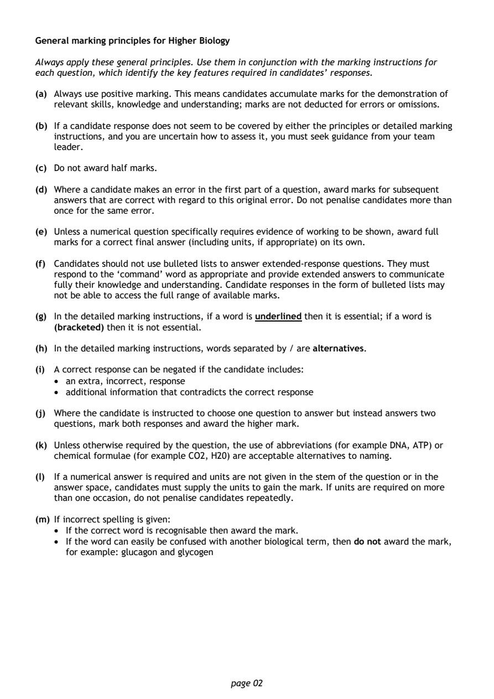
Selectable page text
General marking principles for Higher Biology
Always apply these general principles. Use them in conjunction with the marking instructions for
each question, which identify the key features required in candidates’ responses.
(a) Always use positive marking. This means candidates accumulate marks for the demonstration of
relevant skills, knowledge and understanding; marks are not deducted for errors or omissions.
(b) If a candidate response does not seem to be covered by either the principles or detailed marking
instructions, and you are uncertain how to assess it, you must seek guidance from your team
leader.
(c) Do not award half marks.
(d) Where a candidate makes an error in the first part of a question, award marks for subsequent
answers that are correct with regard to this original error. Do not penalise candidates more than
once for the same error.
(e) Unless a numerical question specifically requires evidence of working to be shown, award full
marks for a correct final answer (including units, if appropriate) on its own.
(f) Candidates should not use bulleted lists to answer extended-response questions. They must
respond to the ‘command’ word as appropriate and provide extended answers to communicate
fully their knowledge and understanding. Candidate responses in the form of bulleted lists may
not be able to access the full range of available marks.
(g) In the detailed marking instructions, if a word is underlined then it is essential; if a word is
(bracketed) then it is not essential.
(h) In the detailed marking instructions, words separated by / are alternatives.
(i) A correct response can be negated if the candidate includes:
• an extra, incorrect, response
• additional information that contradicts the correct response
(j) Where the candidate is instructed to choose one question to answer but instead answers two
questions, mark both responses and award the higher mark.
(k) Unless otherwise required by the question, the use of abbreviations (for example DNA, ATP) or
chemical formulae (for example CO2, H20) are acceptable alternatives to naming.
(l) If a numerical answer is required and units are not given in the stem of the question or in the
answer space, candidates must supply the units to gain the mark. If units are required on more
than one occasion, do not penalise candidates repeatedly.
(m) If incorrect spelling is given:
• If the correct word is recognisable then award the mark.
• If the word can easily be confused with another biological term, then do not award the mark,
for example: glucagon and glycogen
page 02PDF page 3
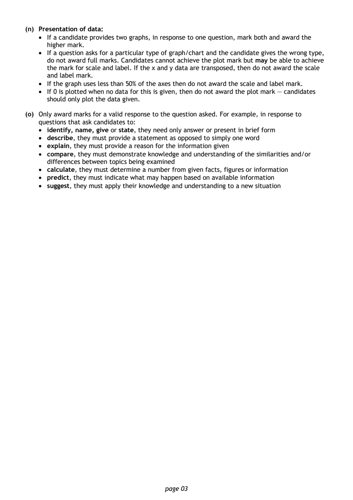
Selectable page text
(n) Presentation of data:
• If a candidate provides two graphs, in response to one question, mark both and award the
higher mark.
• If a question asks for a particular type of graph/chart and the candidate gives the wrong type,
do not award full marks. Candidates cannot achieve the plot mark but may be able to achieve
the mark for scale and label. If the x and y data are transposed, then do not award the scale
and label mark.
• If the graph uses less than 50% of the axes then do not award the scale and label mark.
• If 0 is plotted when no data for this is given, then do not award the plot mark — candidates
should only plot the data given.
(o) Only award marks for a valid response to the question asked. For example, in response to
questions that ask candidates to:
• identify, name, give or state, they need only answer or present in brief form
• describe, they must provide a statement as opposed to simply one word
• explain, they must provide a reason for the information given
• compare, they must demonstrate knowledge and understanding of the similarities and/or
differences between topics being examined
• calculate, they must determine a number from given facts, figures or information
• predict, they must indicate what may happen based on available information
• suggest, they must apply their knowledge and understanding to a new situation
page 03PDF page 4
Paper 2, Question 1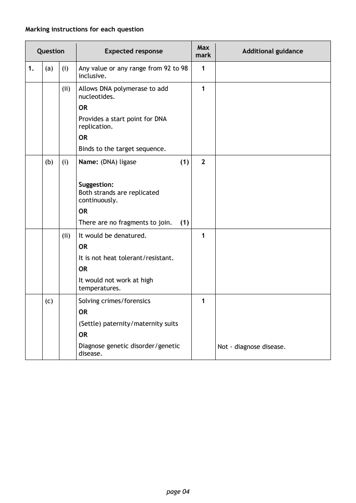
Selectable page text
Marking instructions for each question
Max
Question Expected response Additional guidance
mark
1. (a) (i) Any value or any range from 92 to 98 1
inclusive.
(ii) Allows DNA polymerase to add 1
nucleotides.
OR
Provides a start point for DNA
replication.
OR
Binds to the target sequence.
(b) (i) Name: (DNA) ligase (1) 2
Suggestion:
Both strands are replicated
continuously.
OR
There are no fragments to join. (1)
(ii) It would be denatured. 1
OR
It is not heat tolerant/resistant.
OR
It would not work at high
temperatures.
(c) Solving crimes/forensics 1
OR
(Settle) paternity/maternity suits
OR
Diagnose genetic disorder/genetic Not - diagnose disease.
disease.
page 04PDF page 5
Paper 2, Question 2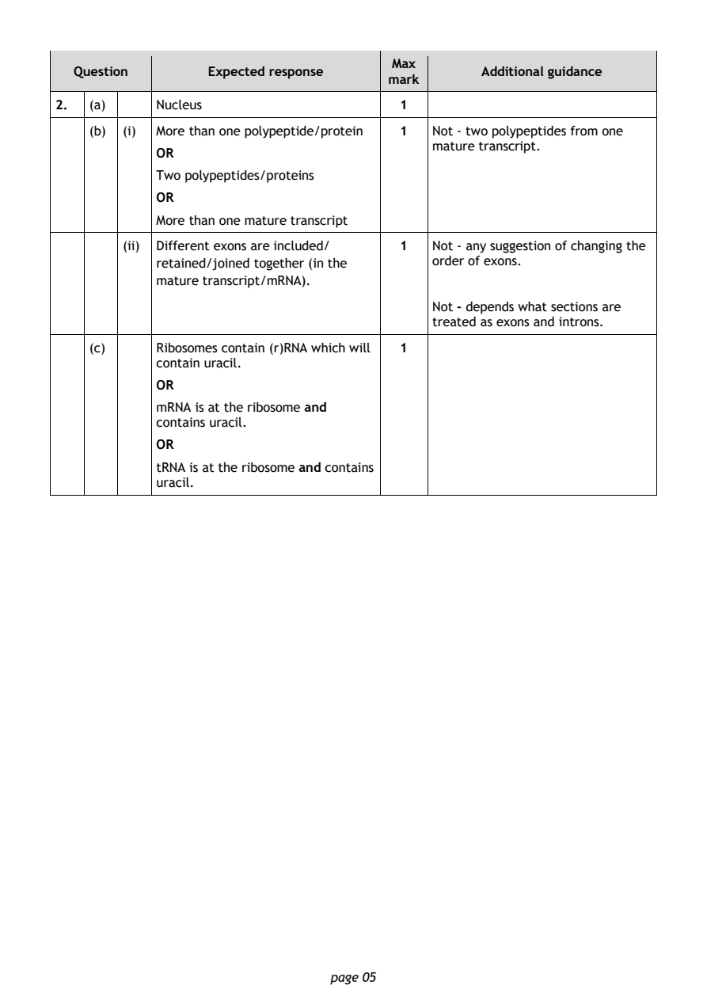
Selectable page text
Max
Question Expected response Additional guidance
mark
2. (a) Nucleus 1
(b) (i) More than one polypeptide/protein 1 Not - two polypeptides from one
mature transcript.
OR
Two polypeptides/proteins
OR
More than one mature transcript
(ii) Different exons are included/ 1 Not - any suggestion of changing the
retained/joined together (in the order of exons.
mature transcript/mRNA).
Not - depends what sections are
treated as exons and introns.
(c) Ribosomes contain (r)RNA which will 1
contain uracil.
OR
mRNA is at the ribosome and
contains uracil.
OR
tRNA is at the ribosome and contains
uracil.
page 05PDF page 6
Paper 2, Question 3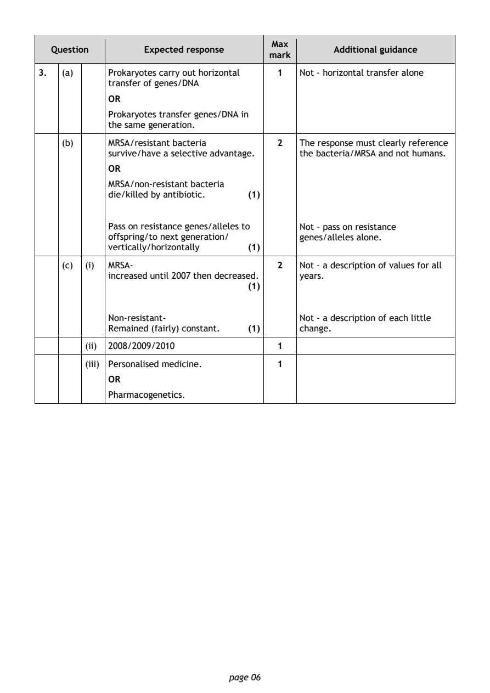
Selectable page text
Max
Question Expected response Additional guidance
mark
3. (a) Prokaryotes carry out horizontal 1 Not - horizontal transfer alone
transfer of genes/DNA
OR
Prokaryotes transfer genes/DNA in
the same generation.
(b) MRSA/resistant bacteria 2 The response must clearly reference
survive/have a selective advantage. the bacteria/MRSA and not humans.
OR
MRSA/non-resistant bacteria
die/killed by antibiotic. (1)
Pass on resistance genes/alleles to Not – pass on resistance
offspring/to next generation/ genes/alleles alone.
vertically/horizontally (1)
(c) (i) MRSA- 2 Not - a description of values for all
increased until 2007 then decreased. years.
(1)
Non-resistant- Not - a description of each little
Remained (fairly) constant. (1) change.
(ii) 2008/2009/2010 1
(iii) Personalised medicine. 1
OR
Pharmacogenetics.
page 06PDF page 7
Paper 2, Question 4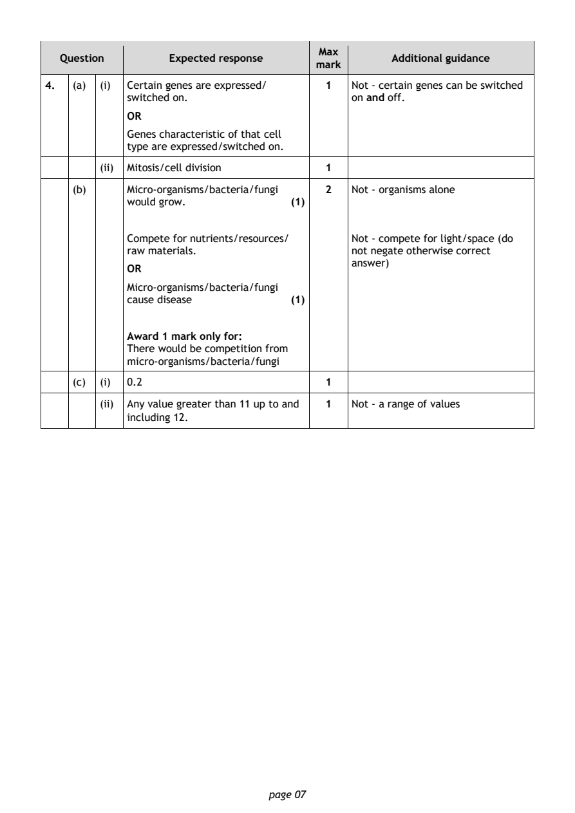
Selectable page text
Max
Question Expected response Additional guidance
mark
4. (a) (i) Certain genes are expressed/ 1 Not - certain genes can be switched
switched on. on and off.
OR
Genes characteristic of that cell
type are expressed/switched on.
(ii) Mitosis/cell division 1
(b) Micro-organisms/bacteria/fungi 2 Not - organisms alone
would grow. (1)
Compete for nutrients/resources/ Not - compete for light/space (do
raw materials. not negate otherwise correct
answer)
OR
Micro-organisms/bacteria/fungi
cause disease (1)
Award 1 mark only for:
There would be competition from
micro-organisms/bacteria/fungi
(c) (i) 0.2 1
(ii) Any value greater than 11 up to and 1 Not - a range of values
including 12.
page 07PDF page 8
Paper 2, Question 5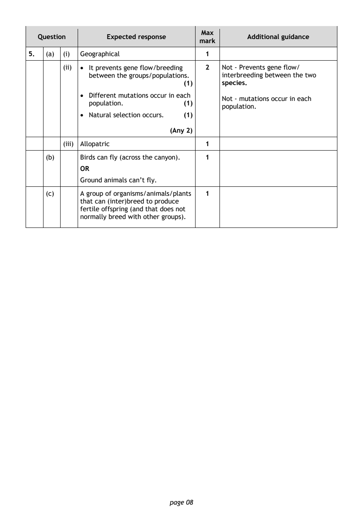
Selectable page text
Max
Question Expected response Additional guidance
mark
5. (a) (i) Geographical 1
(ii) • It prevents gene flow/breeding 2 Not - Prevents gene flow/
between the groups/populations. interbreeding between the two
(1) species.
• Different mutations occur in each
Not - mutations occur in each
population. (1)
population.
• Natural selection occurs. (1)
(Any 2)
(iii) Allopatric 1
(b) Birds can fly (across the canyon). 1
OR
Ground animals can’t fly.
(c) A group of organisms/animals/plants 1
that can (inter)breed to produce
fertile offspring (and that does not
normally breed with other groups).
page 08PDF page 9
Paper 2, Question 6Paper 2, Question 7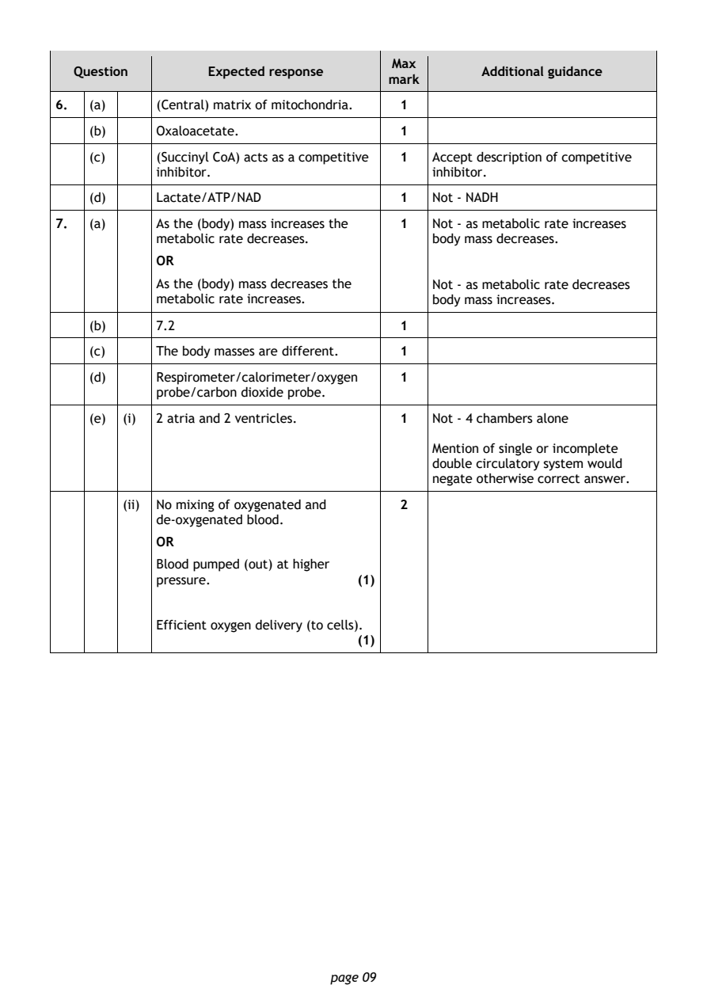
Selectable page text
Max
Question Expected response Additional guidance
mark
6. (a) (Central) matrix of mitochondria. 1
(b) Oxaloacetate. 1
(c) (Succinyl CoA) acts as a competitive 1 Accept description of competitive
inhibitor. inhibitor.
(d) Lactate/ATP/NAD 1 Not - NADH
7. (a) As the (body) mass increases the 1 Not - as metabolic rate increases
metabolic rate decreases. body mass decreases.
OR
As the (body) mass decreases the Not - as metabolic rate decreases
metabolic rate increases. body mass increases.
(b) 7.2 1
(c) The body masses are different. 1
(d) Respirometer/calorimeter/oxygen 1
probe/carbon dioxide probe.
(e) (i) 2 atria and 2 ventricles. 1 Not - 4 chambers alone
Mention of single or incomplete
double circulatory system would
negate otherwise correct answer.
(ii) No mixing of oxygenated and 2
de-oxygenated blood.
OR
Blood pumped (out) at higher
pressure. (1)
Efficient oxygen delivery (to cells).
(1)
page 09PDF page 10
Paper 2, Question 8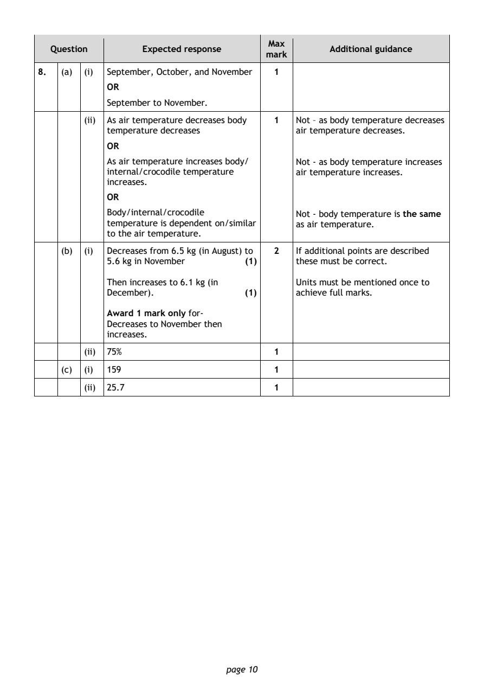
Selectable page text
Max
Question Expected response Additional guidance
mark
8. (a) (i) September, October, and November 1
OR
September to November.
(ii) As air temperature decreases body 1 Not – as body temperature decreases
temperature decreases air temperature decreases.
OR
As air temperature increases body/ Not - as body temperature increases
internal/crocodile temperature air temperature increases.
increases.
OR
Body/internal/crocodile Not - body temperature is the same
temperature is dependent on/similar as air temperature.
to the air temperature.
(b) (i) Decreases from 6.5 kg (in August) to 2 If additional points are described
5.6 kg in November (1) these must be correct.
Then increases to 6.1 kg (in Units must be mentioned once to
December). (1) achieve full marks.
Award 1 mark only for-
Decreases to November then
increases.
(ii) 75% 1
(c) (i) 159 1
(ii) 25.7 1
page 10PDF page 11
Paper 2, Question 9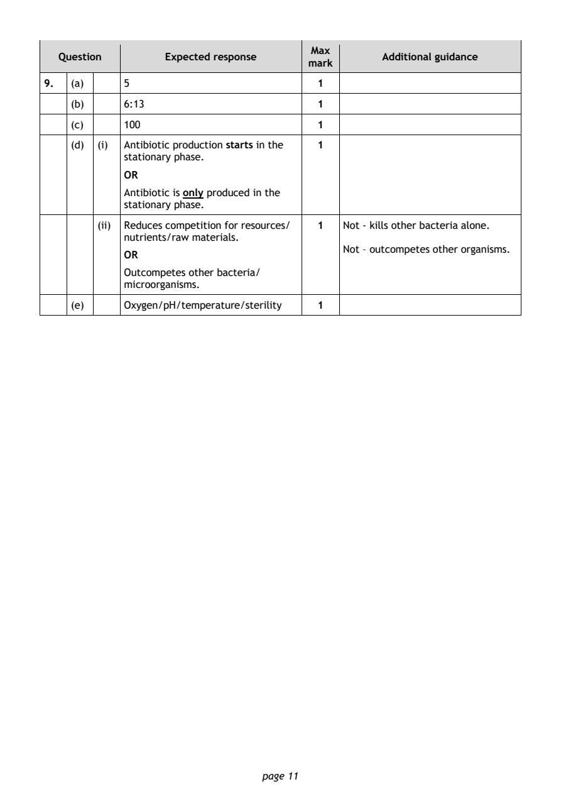
Selectable page text
Max
Question Expected response Additional guidance
mark
9. (a) 5 1
(b) 6:13 1
(c) 100 1
(d) (i) Antibiotic production starts in the 1
stationary phase.
OR
Antibiotic is only produced in the
stationary phase.
(ii) Reduces competition for resources/ 1 Not - kills other bacteria alone.
nutrients/raw materials.
Not – outcompetes other organisms.
OR
Outcompetes other bacteria/
microorganisms.
(e) Oxygen/pH/temperature/sterility 1
page 11PDF page 12
Paper 2, Question 10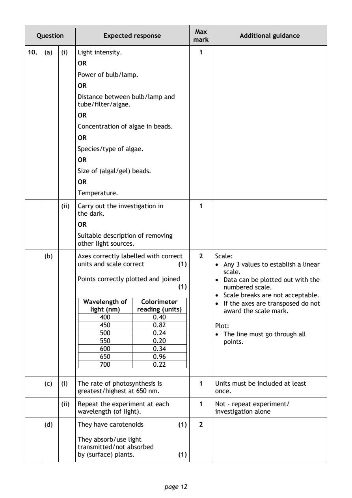
Selectable page text
Max
Question Expected response Additional guidance
mark
10. (a) (i) Light intensity. 1
OR
Power of bulb/lamp.
OR
Distance between bulb/lamp and
tube/filter/algae.
OR
Concentration of algae in beads.
OR
Species/type of algae.
OR
Size of (algal/gel) beads.
OR
Temperature.
(ii) Carry out the investigation in 1
the dark.
OR
Suitable description of removing
other light sources.
(b) Axes correctly labelled with correct 2 Scale:
units and scale correct (1) • Any 3 values to establish a linear
scale.
Points correctly plotted and joined • Data can be plotted out with the
(1) numbered scale.
• Scale breaks are not acceptable.
Wavelength of Colorimeter • If the axes are transposed do not
light (nm) reading (units) award the scale mark.
400 0.40
450 0.82 Plot:
500 0.24 • The line must go through all
550 0.20 points.
600 0.34
650 0.96
700 0.22
(c) (i) The rate of photosynthesis is 1 Units must be included at least
greatest/highest at 650 nm. once.
(ii) Repeat the experiment at each 1 Not - repeat experiment/
wavelength (of light). investigation alone
(d) They have carotenoids (1) 2
They absorb/use light
transmitted/not absorbed
by (surface) plants. (1)
page 12PDF page 13
Paper 2, Question 11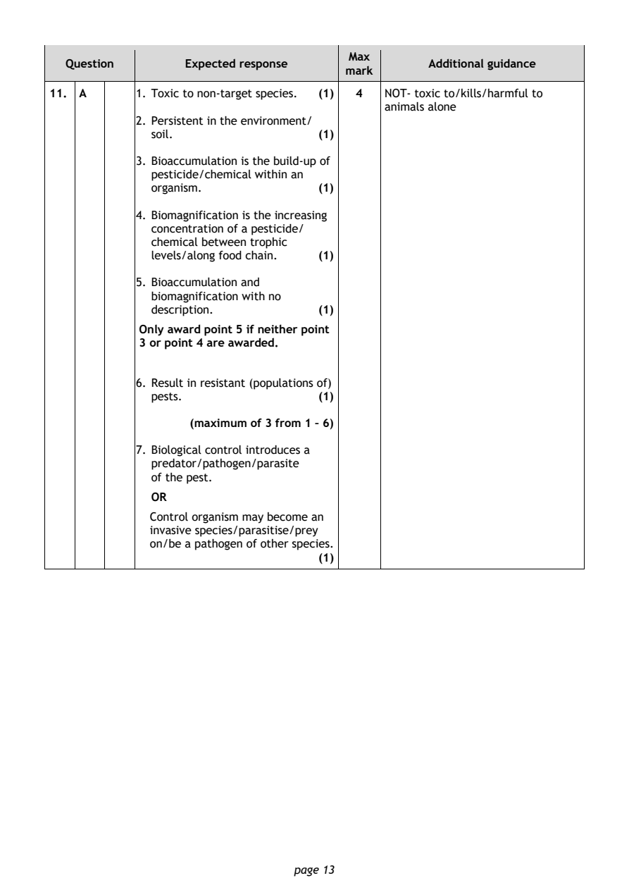
Selectable page text
Max
Question Expected response Additional guidance
mark
11. A 1. Toxic to non-target species. (1) 4 NOT- toxic to/kills/harmful to
animals alone
2. Persistent in the environment/
soil. (1)
3. Bioaccumulation is the build-up of
pesticide/chemical within an
organism. (1)
4. Biomagnification is the increasing
concentration of a pesticide/
chemical between trophic
levels/along food chain. (1)
5. Bioaccumulation and
biomagnification with no
description. (1)
Only award point 5 if neither point
3 or point 4 are awarded.
6. Result in resistant (populations of)
pests. (1)
(maximum of 3 from 1 – 6)
7. Biological control introduces a
predator/pathogen/parasite
of the pest.
OR
Control organism may become an
invasive species/parasitise/prey
on/be a pathogen of other species.
(1)
page 13PDF page 14
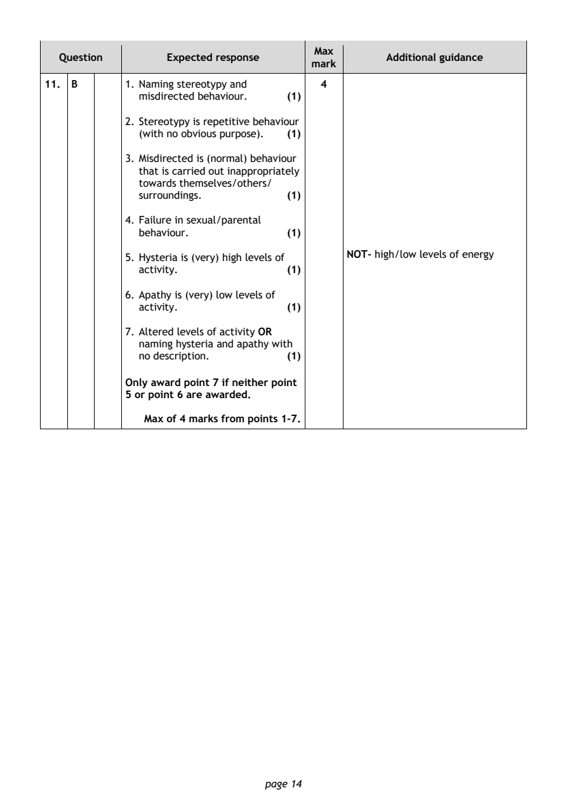
Selectable page text
Max
Question Expected response Additional guidance
mark
11. B 1. Naming stereotypy and 4
misdirected behaviour. (1)
2. Stereotypy is repetitive behaviour
(with no obvious purpose). (1)
3. Misdirected is (normal) behaviour
that is carried out inappropriately
towards themselves/others/
surroundings. (1)
4. Failure in sexual/parental
behaviour. (1)
5. Hysteria is (very) high levels of NOT- high/low levels of energy
activity. (1)
6. Apathy is (very) low levels of
activity. (1)
7. Altered levels of activity OR
naming hysteria and apathy with
no description. (1)
Only award point 7 if neither point
5 or point 6 are awarded.
Max of 4 marks from points 1-7.
page 14PDF page 15
Paper 2, Question 12Paper 2, Question 13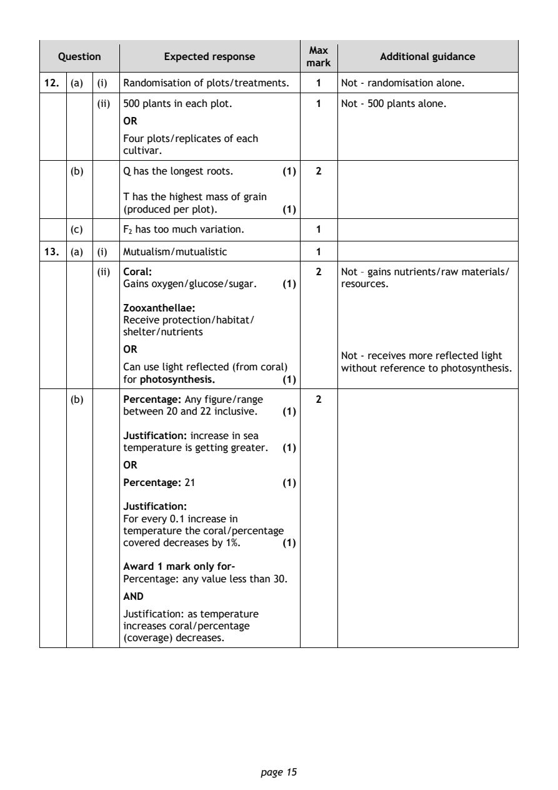
Selectable page text
Max
Question Expected response Additional guidance
mark
12. (a) (i) Randomisation of plots/treatments. 1 Not - randomisation alone.
(ii) 500 plants in each plot. 1 Not - 500 plants alone.
OR
Four plots/replicates of each
cultivar.
(b) Q has the longest roots. (1) 2
T has the highest mass of grain
(produced per plot). (1)
(c) F has too much variation. 1
2
13. (a) (i) Mutualism/mutualistic 1
(ii) Coral: 2 Not – gains nutrients/raw materials/
Gains oxygen/glucose/sugar. (1) resources.
Zooxanthellae:
Receive protection/habitat/
shelter/nutrients
OR
Not - receives more reflected light
Can use light reflected (from coral) without reference to photosynthesis.
for photosynthesis. (1)
(b) Percentage: Any figure/range 2
between 20 and 22 inclusive. (1)
Justification: increase in sea
temperature is getting greater. (1)
OR
Percentage: 21 (1)
Justification:
For every 0.1 increase in
temperature the coral/percentage
covered decreases by 1%. (1)
Award 1 mark only for-
Percentage: any value less than 30.
AND
Justification: as temperature
increases coral/percentage
(coverage) decreases.
page 15PDF page 16
Paper 2, Question 14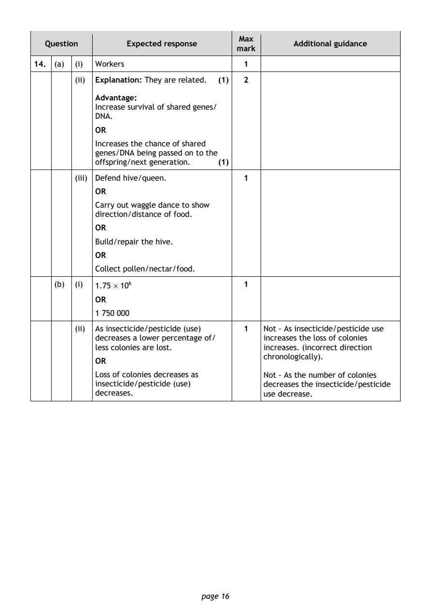
Selectable page text
Max
Question Expected response Additional guidance
mark
14. (a) (i) Workers 1
(ii) Explanation: They are related. (1) 2
Advantage:
Increase survival of shared genes/
DNA.
OR
Increases the chance of shared
genes/DNA being passed on to the
offspring/next generation. (1)
(iii) Defend hive/queen. 1
OR
Carry out waggle dance to show
direction/distance of food.
OR
Build/repair the hive.
OR
Collect pollen/nectar/food.
(b) (i) 1.75 × 10⁶ 1
OR
1 750 000
(ii) As insecticide/pesticide (use) 1 Not - As insecticide/pesticide use
decreases a lower percentage of/ increases the loss of colonies
less colonies are lost. increases. (incorrect direction
chronologically).
OR
Loss of colonies decreases as Not - As the number of colonies
insecticide/pesticide (use) decreases the insecticide/pesticide
decreases. use decrease.
page 16PDF page 17
Paper 2, Question 15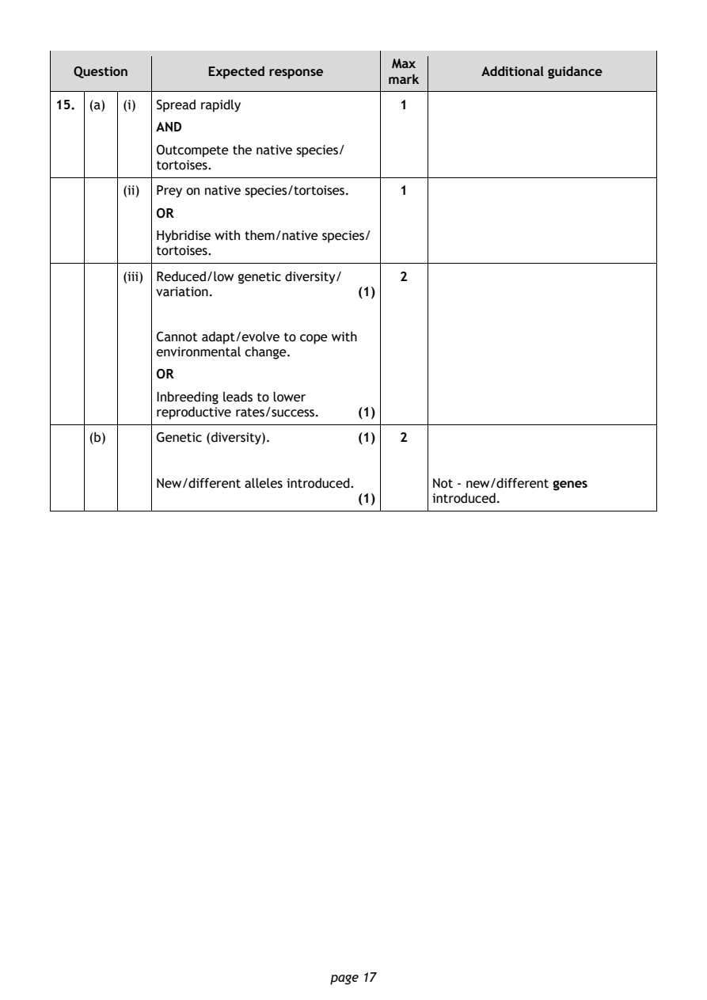
Selectable page text
Max
Question Expected response Additional guidance
mark
15. (a) (i) Spread rapidly 1
AND
Outcompete the native species/
tortoises.
(ii) Prey on native species/tortoises. 1
OR
Hybridise with them/native species/
tortoises.
(iii) Reduced/low genetic diversity/ 2
variation. (1)
Cannot adapt/evolve to cope with
environmental change.
OR
Inbreeding leads to lower
reproductive rates/success. (1)
(b) Genetic (diversity). (1) 2
New/different alleles introduced. Not - new/different genes
(1) introduced.
page 17PDF page 18
Paper 2, Question 16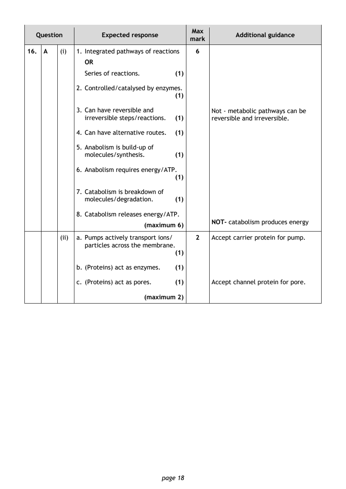
Selectable page text
Max
Question Expected response Additional guidance
mark
16. A (i) 1. Integrated pathways of reactions 6
OR
Series of reactions. (1)
2. Controlled/catalysed by enzymes.
(1)
3. Can have reversible and Not - metabolic pathways can be
irreversible steps/reactions. (1) reversible and irreversible.
4. Can have alternative routes. (1)
5. Anabolism is build-up of
molecules/synthesis. (1)
6. Anabolism requires energy/ATP.
(1)
7. Catabolism is breakdown of
molecules/degradation. (1)
8. Catabolism releases energy/ATP.
NOT- catabolism produces energy
(maximum 6)
(ii) a. Pumps actively transport ions/ 2 Accept carrier protein for pump.
particles across the membrane.
(1)
b. (Proteins) act as enzymes. (1)
c. (Proteins) act as pores. (1) Accept channel protein for pore.
(maximum 2)
page 18PDF page 19
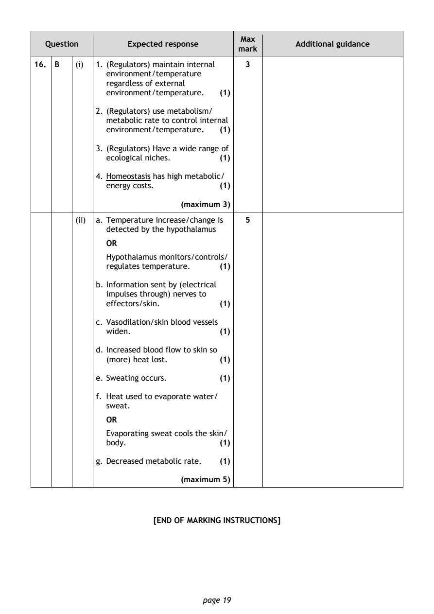
Selectable page text
Max
Question Expected response Additional guidance
mark
16. B (i) 1. (Regulators) maintain internal 3
environment/temperature
regardless of external
environment/temperature. (1)
2. (Regulators) use metabolism/
metabolic rate to control internal
environment/temperature. (1)
3. (Regulators) Have a wide range of
ecological niches. (1)
4. Homeostasis has high metabolic/
energy costs. (1)
(maximum 3)
(ii) a. Temperature increase/change is 5
detected by the hypothalamus
OR
Hypothalamus monitors/controls/
regulates temperature. (1)
b. Information sent by (electrical
impulses through) nerves to
effectors/skin. (1)
c. Vasodilation/skin blood vessels
widen. (1)
d. Increased blood flow to skin so
(more) heat lost. (1)
e. Sweating occurs. (1)
f. Heat used to evaporate water/
sweat.
OR
Evaporating sweat cools the skin/
body. (1)
g. Decreased metabolic rate. (1)
(maximum 5)
[END OF MARKING INSTRUCTIONS]
page 19PDF page 20
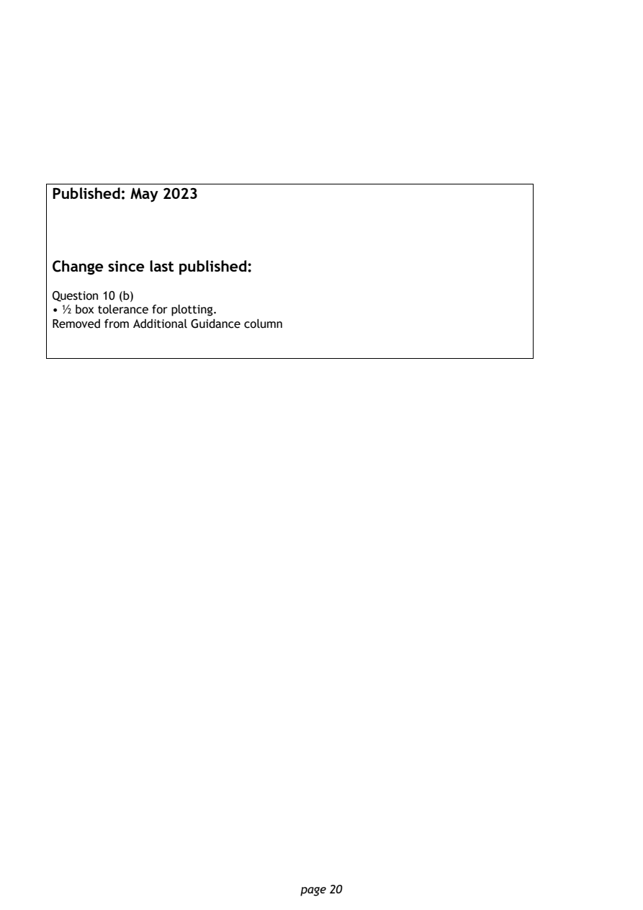
Selectable page text
Published: May 2023
Change since last published:
Question 10 (b)
• ½ box tolerance for plotting.
Removed from Additional Guidance column
page 20